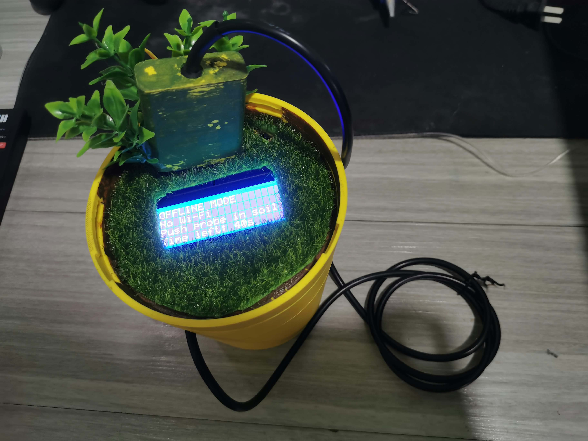
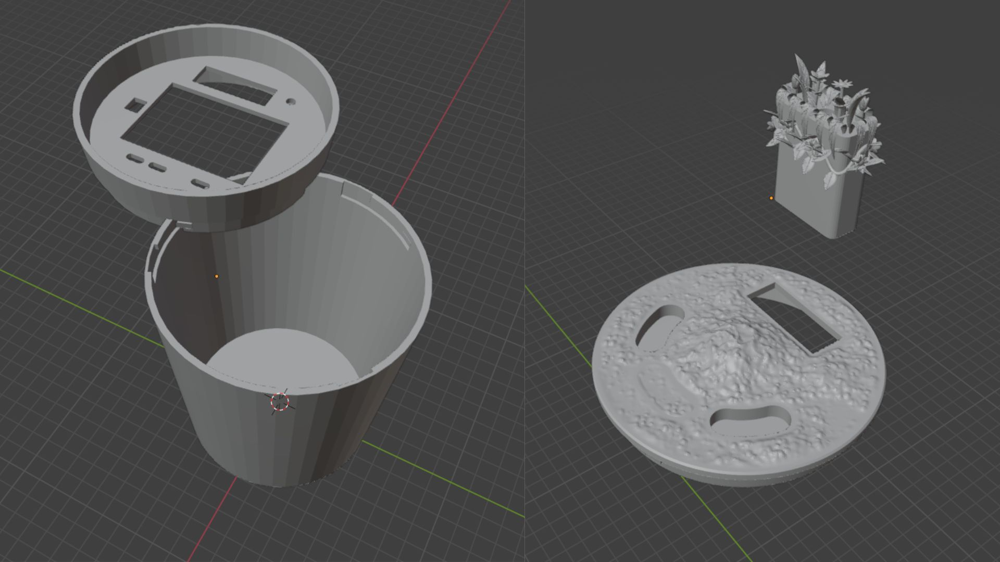
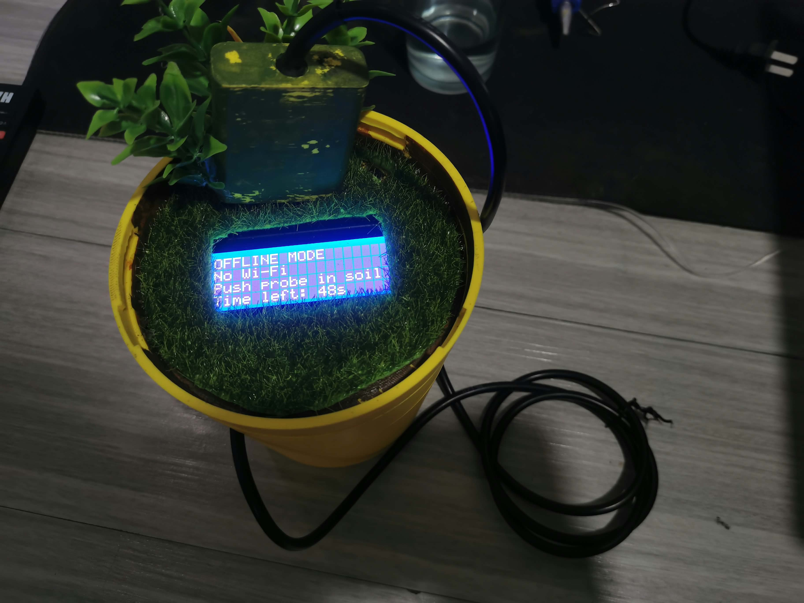
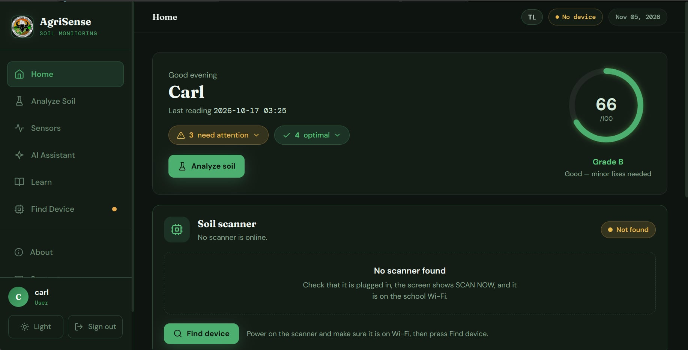
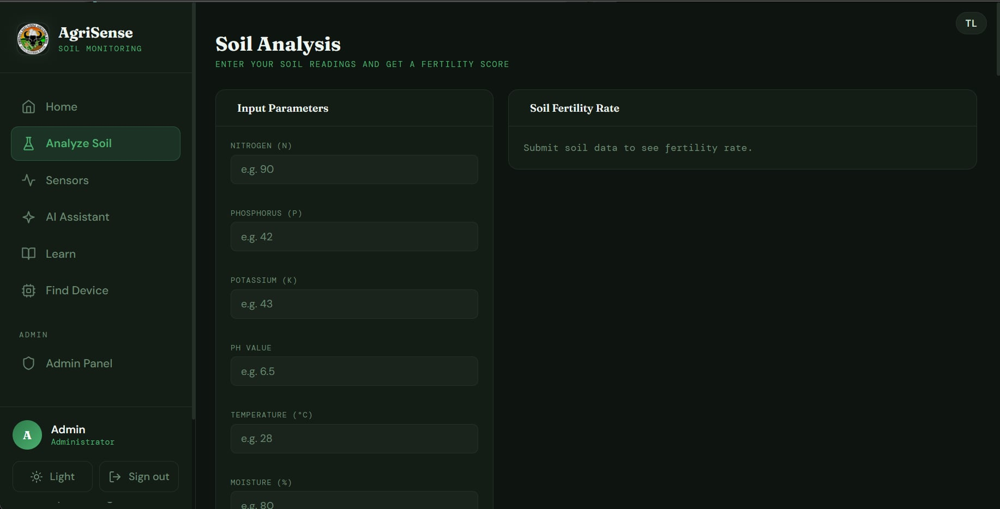
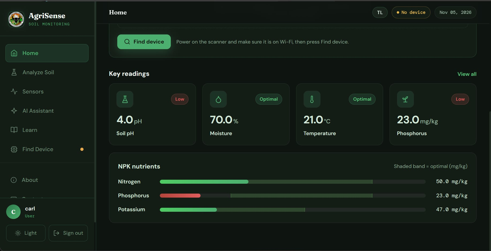

Welcome! I'm
Carl Matthew Reyes
Junior Back-End Web Developer Intern
BSU College of Industrial Technology student building responsive websites and embedded-systems prototypes. Open to an OJT placement where I can contribute clean, well-documented work.
- Target Training Hours 600 Hours
- Availability Window Starting 2nd Semester A.Y. 2026–2027
About Me
Who I am, where I study, and what I bring to a team.
Professional Summary
I am a Computer Technology student at Bulacan State University with hands-on experience in embedded systems, ESP32 development, hardware integration, and web development. Skilled in troubleshooting, Arduino programming, UI/UX design, and IoT prototyping, with a strong interest in developing practical technology solutions.
Academic Background
- Degree Program
- Bachelor of Industrial Technology
- Major
- Computer Technology
- Institution
- Bulacan State University – College of Industrial Technology
- Expected Graduation
- 2027
Core Competencies
- Rapid AI-assisted prototyping
- Responsive layout debugging
- Technical documentation
- Version control basics (Git/GitHub)
- Embedded systems prototyping (ESP32, Arduino)
- Sensor interfacing and calibration (RS485, MAX485)
Technical Skills
The tools and technologies I use to design, build and document my work.
Tools & Platforms
Design & Digital Media
Industrial & Technical Foundations
My Portfolio
Featured Projects



ESP32-S3 Soil NPK Scanner
Role: Hardware & Firmware Developer
A handheld prototype that measures soil nitrogen, phosphorus, and potassium (NPK) levels with an ESP32-S3, an RS485 NPK sensor and an I2C LCD Display, and sends readings to a web platform.
Overview
Developed the hardware and firmware components of an ESP32-S3-based soil-scanning device. The system integrates a 7-in-1 RS485 soil sensor through a MAX485 transceiver module and features an I2C LCD Display for user interaction. It collects soil parameter readings and transmits the acquired data through Wi-Fi to the SoilSense web platform for analysis and crop recommendations.
Key features
- RS485 communication with a 7-in-1 soil NPK sensor
- I2C LCD Display for real-time readings and user interface
- ESP32-S3-based firmware for sensor acquisition and device control.
- Battery-powered hardware design with voltage regulation for different components.
- MAX485 transceiver for RS485-to-UART communication.
- Wi-Fi upload of readings to the web platform
My responsibilities
- Designed and assembled hardware connections integrating the ESP32-S3, RS485 soil sensor, MAX485 module, I2C LCD Display, and supporting electronic components.
- Conducted hardware testing and troubleshooting involving sensor communication, GPIO assignments, power distribution, and LCD operation.
- Developed firmware in Arduino C++ to manage sensor data acquisition, LCD display updates, and Wi-Fi data transmission to the web platform.
What I learned
Developing the hardware strengthened my understanding of embedded systems, microcontroller interfacing, serial communication protocols, and power management. One of the major challenges was troubleshooting communication and power-related issues between the ESP32-S3, RS485 sensor, and display. Through systematic testing, firmware adjustments, and hardware debugging, I gained practical experience in integrating multiple electronic components into a functional IoT-based soil monitoring device.



Soil Analysis Web Platform
Role: Assistant Web Developer
A web application that stores and displays soil scan data and gives crop recommendations, with student and admin accounts and device pairing through a code.
Overview
The platform receives readings from the scanner and shows them to the signed-in user. Students and admins each have their own accounts, and every account only sees its own scan data.
Key features
- Registration and login for student and admin accounts
- Device pairing: Connect on the scanner to link it to your account
- Crop recommendations based on the scanned NPK values
My responsibilities
- Contributed to UI polishing, including layout adjustments, styling improvements, and interface consistency.
- Participated in testing and reviewing website functionality to identify interface issues and inconsistencies.
- Helped verify the deployed website and its accessibility after deployment.
What I learned
Through this project, I gained practical experience in collaborative web development, interface refinement, and web deployment using Vercel. I also learned the importance of testing, maintaining consistent user interfaces, and ensuring that a web application remains accessible and functional after deployment.
Interested in bringing me onto your team for OJT? Let's connect.
I'm open to inquiries from industry partners and HR teams. Send me an email and I'll respond promptly.
Email Me Directly- Email carlmatthewreyes6@gmail.com
- LinkedIn linkedin.com/in/carl-matthew-reyes-3824b0449/
- GitHub github.com/mizuno1111
- Preferred Deployment Malolos / Bulacan / Metro Manila / Remote